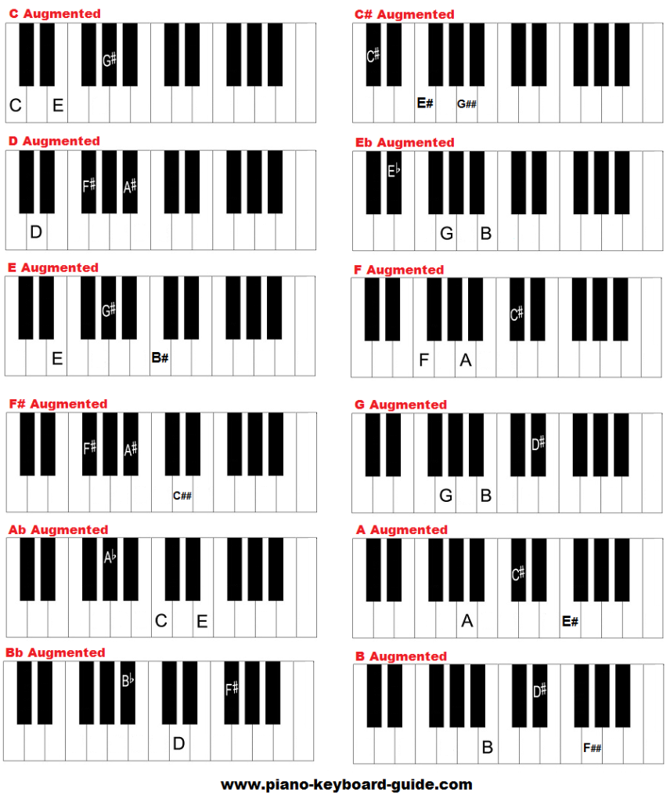

Augmented chords, according to Landr.com, have an "odd and unsettling" sound, and are the rarest chord to see in pieces of music.
Augmented chords are created just like major chords but with a raised fifth (8 semitones). You would start similarly to a major chord - taking C augmented as an example, you would first go up 4 semitones from the root, which would be E, and then up another 4 to get to G#. The final chord structure would be C, E, and G#. Another way to describe it would be to go up 4 semitones from the root, and then 8 semitones from the root.According to Blog.discmakers.com, some popular songs with augmented chords include The Beatles' "Oh! Darling" and Pink Floyd's "The Gunner's Dream".